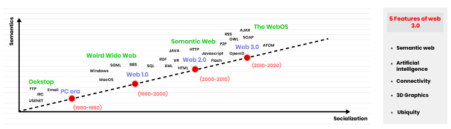
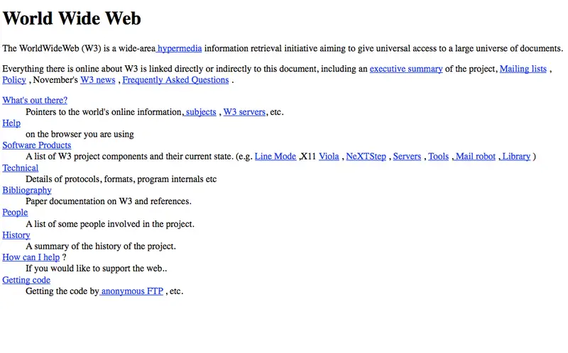
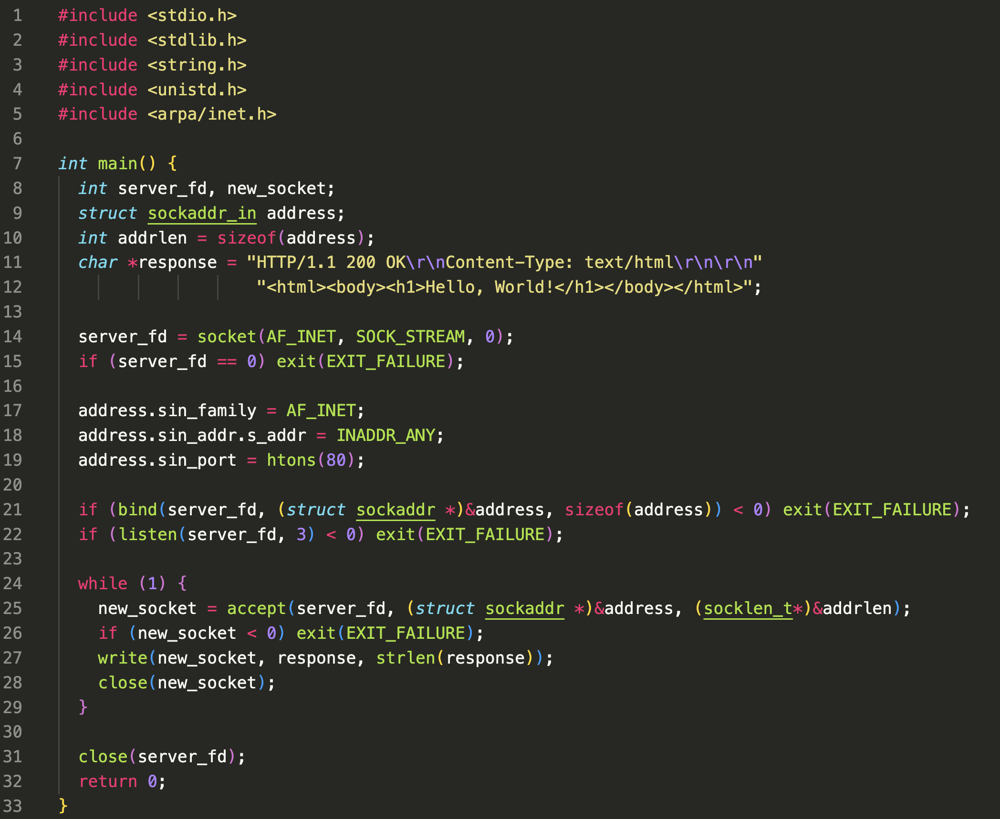
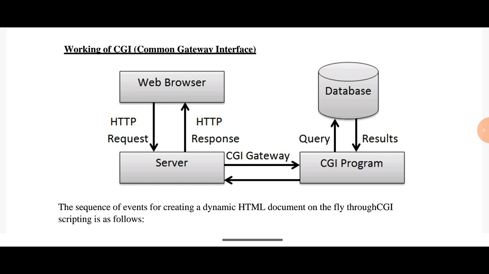
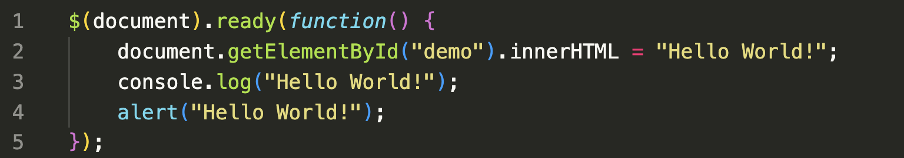
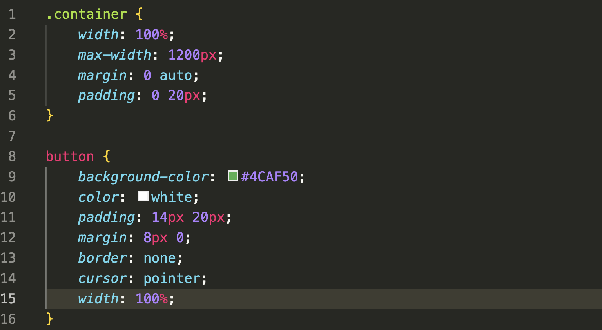
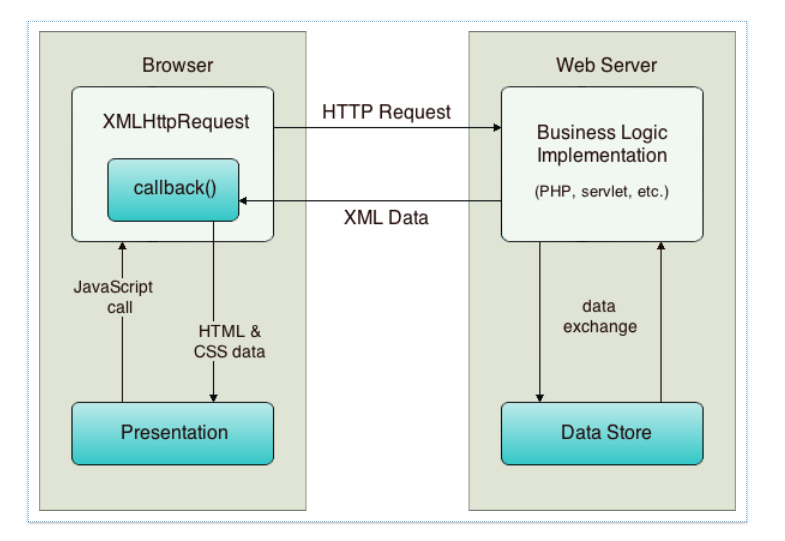
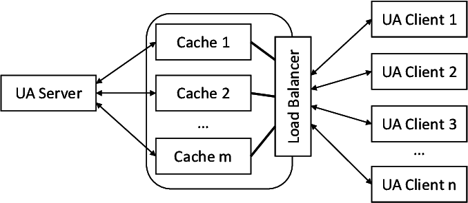

From Static Pages to Dynamic Applications
Just the header, paragraph, and styling HTML tags
A simple web server could be written in a few lines
Web clients were also very simple, with a lot just rendering HTML through a terminal output
Static pages are boring though, so some people got to thinking and came up with a way to make websites more dynamic and interactive. This was the birth of using HTTP headers to send data to the server and have it generate a new page on the fly.
Dynamiticity was usually done by using Query Parameters in the URL, setting custom HTTP headers, and/or sending data in the body of the request via a POST request like when a user submits a form.
Since this became pretty standardized, developers started to create libraries and frameworks to make this easier. This was the birth of CGI (Common Gateway Interface).
Before, HTML was forced into a linear format of either inline or blocked elements. With the advent of CSS and JavaScript though, developers were able to change the ordering and look of elements, as well as the behavior that happens when users interact with the page.
 This brought about a whole new era of web development with the ability to create dynamic and interactive web pages.
With the advent of AJAX (Asynchronous JavaScript and XML), developers were able to send and receive data from the server without having to reload the page. This was a huge step forward in creating more dynamic and interactive web applications.
AJAX is actually still heavily in use today, 20 years later, believe it or not; it's also noted as THE key reason Gmail became such a success! Now, in around 2003-2007, load balancing and server-side caching became more popular as websites started to get more and more traffic. This was the birth of the modern web and the start of the era of web applications.
Infrastructure also started to become more complex, with the introduction of load balancers and reverse proxies. Spreading your database across multiple regions also became more popular as well as the use of CDNs (Content Delivery Networks) to cache and serve static assets.
With the increasing amount of traffic and infrastructure to deal with, developers started to run into issues with blocking code. This was the birth of the idea of asynchronous programming, where code could run in the background and not block the main thread from accepting new requests.
Eventually, Node.js was created, which allowed developers to write server-side code in JavaScript and use the same language on the frontend and backend while being very performant I/O wise compared to other server-side languages which had lack luster async support.
With the increasing complexity of web applications, the frontend was starting to get complex too; so developers started to create libraries and frameworks to help manage the complexity. This was the birth of the idea of the Virtual DOM.
What it allowed developers to do was to create a virtual representation of the DOM in memory and then compare it to the actual DOM on the page. If there were any differences, it would only update the parts that needed to be updated, rather than re-rendering the entire page.
This was the birth of frontend libraries like React, Angular, and Vue.
Today, web development is a complex and ever-changing field. With the advent of cloud computing, serverless architecture, and the increasing complexity of web applications, developers are constantly having to learn new technologies and paradigms to keep up with the industry.
You could instantly scale your app to 7 continents using serverless, do machine learning in the browser using WebAssembly, make a game using WebGPU API or ThreeJS, etc. The field has never been more exciting and full of possibilities.
Thank you for listening to my presentation on the Evolution of Web Development. If you have any questions, feel free to ask!
Now we're going to move onto how we can get started with the modern web and some of the tools and technologies that are popular today.
To get started on the next half of this session, please make sure that you have Docker installed on your machine. If you don't have it installed, you can download it from here.
Once you have Docker installed, you can run the following command to get started:
Now that we've gone over the history of web development, let's talk about how you can get started with web development today.